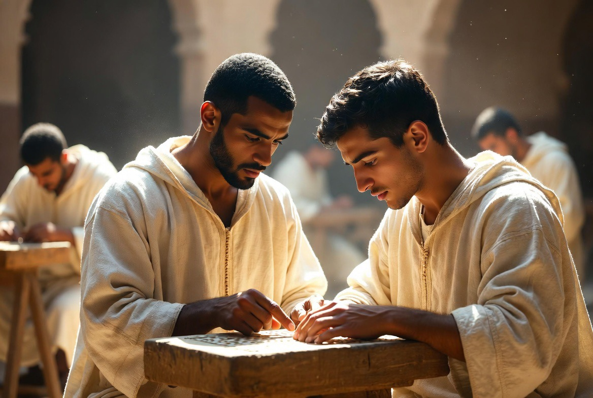
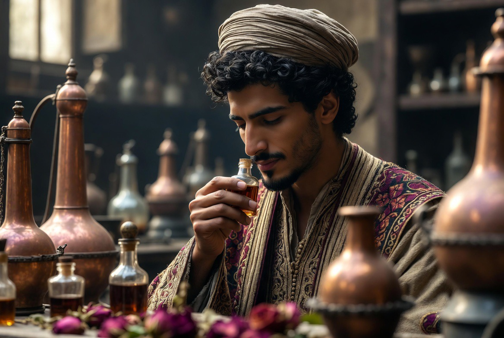
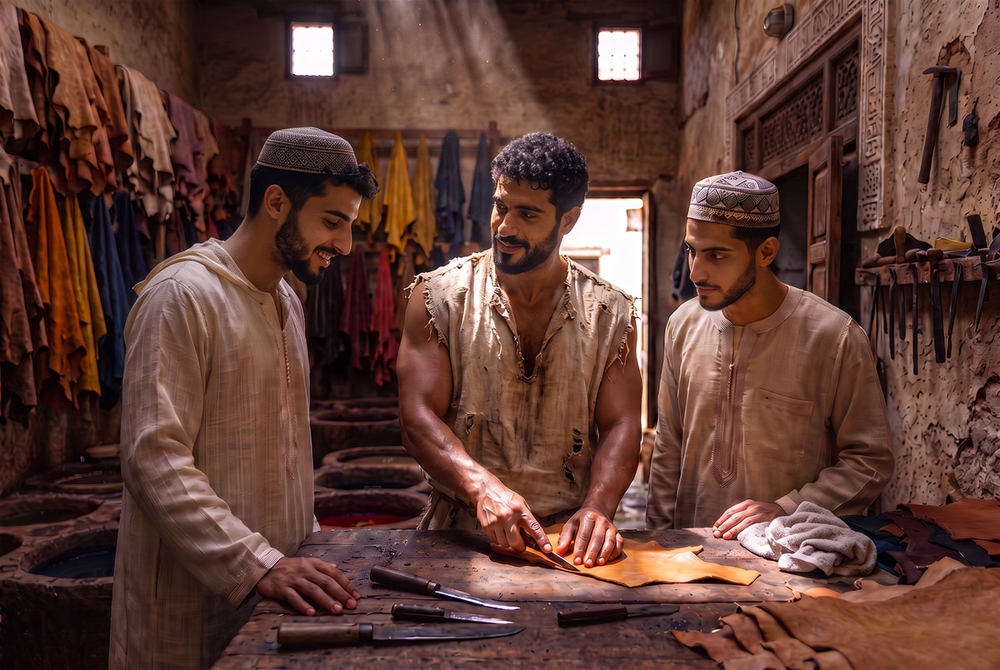
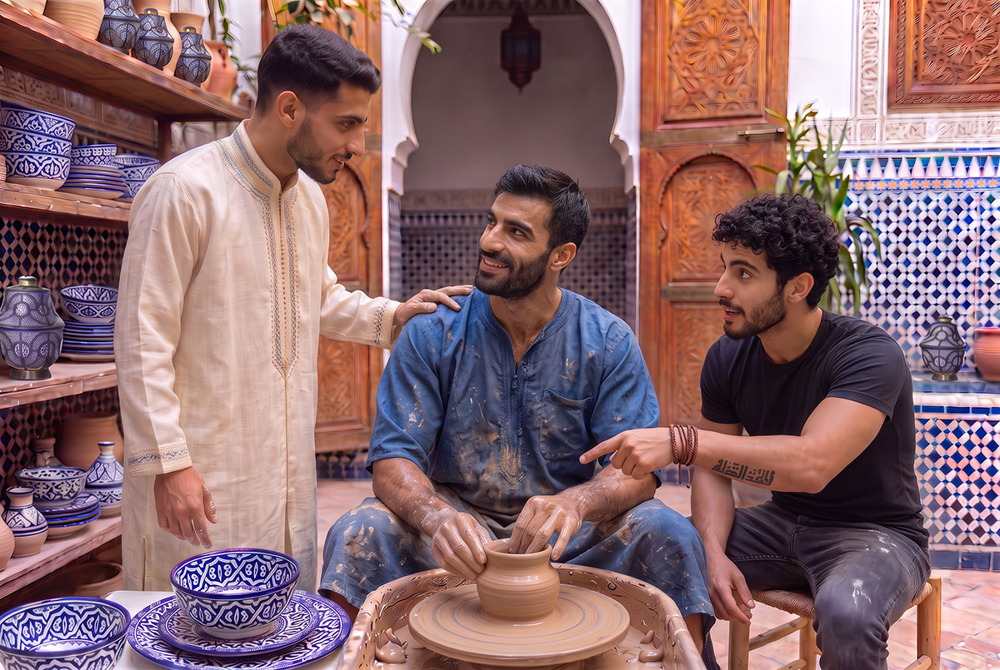
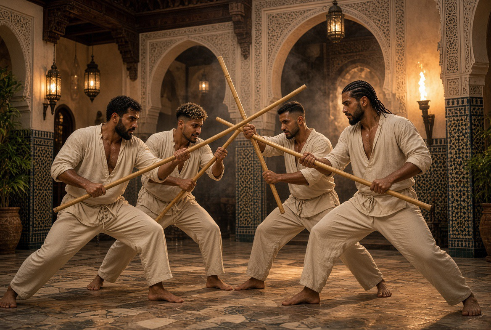
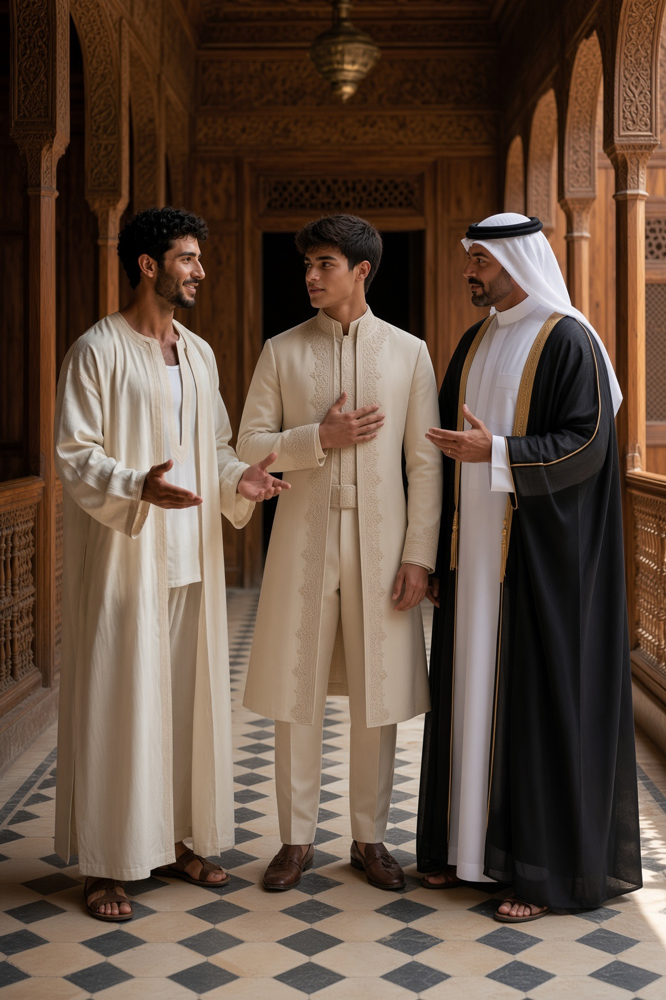
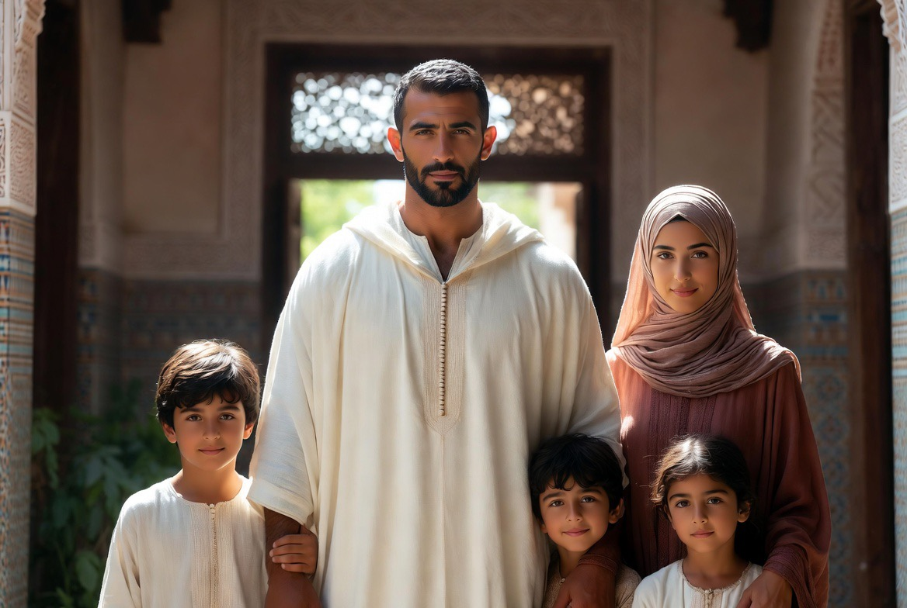

Dar al-Hiraf
The house of crafts. Formation of young men through gesture, study and discipline of the body.

Dar al-Hiraf is not a tourist workshop. It is a residential school: young men live, work, pray and form themselves together. The disciplines — calligraphy, music, zellige, plaster, weaving, leatherwork, pottery, perfumes, wood, iron, archery — are inscribed in the same rhythm as prayer, study, the body, the table and the evening conversation.
Futuwwa — the ideal of companionship

In the medieval Islamic world, crafts were not transmitted only as technique: they were inscribed in futuwwa, an ideal of companionship that bound the gesture to honour, the hand to the given word, the apprentice to the master.
Dar al-Hiraf takes up this logic: residency, discipline of the body, apprenticeship and prayer are not separated. In Fez, under the Marinids, the craft guilds already lived according to this rule.
The man capable of holding a craft is also the one who can hold a household. Maghrebi futuwwa remains the reference.
Friendship, honour, loyalty, chivalry, discipline — what futuwwa concretely requires of a man is developed on a dedicated page.
Brotherhood & uprightness →The disciplines
اليدُ إذا عملتْ أحسنتْ، والعلمُ إذا جُرِّبَ ثبتَ
« The hand, when it works, embellishes; knowledge, when it is tested, is strengthened. »

Calligraphy
The qalam, the page, the breath. Writing as inner discipline.
In the Maghreb, the khatt maghrebi, distinct from the Eastern scripts. Born in al-Andalus then transmitted to Fez.
الخطُّ هندسةٌ روحانيةٌ ظهرتْ بآلةٍ جسمانيةٍ
« Calligraphy is a geometry of the spirit that appeared through a bodily instrument. » — Ibn Muqla
The basmala — bismillāh al-raḥmān al-raḥīm — opens the Qur’an and structures daily life. It is also the first exercise of every calligraphy apprentice: a foundational gesture before becoming a decorative motif, it has always adorned frontispieces of manuscripts, doors of madrasas and façades of mosques.

Music & song
Oud, ney, voice. Rhythm and memory.
Andalusian music (al-âla): after 1492, the musicians of Spain transmitted the nouba.
شربنا على ذكرِ الحبيبِ مدامةً سكرنا بها من قبلِ أن يُخلقَ الكرمُ
« In memory of the Beloved we drank a wine; we were intoxicated by it before the vine was created. » — Ibn al-Fāriḍ

Zellige
Geometry, cutting, setting.
Zellige was born in Fez under the Marinids (13th–14th c.). The interlace points to unity (tawhid).

Plaster & mocárabe
Sculpted stucco, relief, light. Maturity in al-Andalus and the Maghreb.

Weaving & brocade
Silk, gold thread, draw-loom.
نسجوا من الذهبِ الورودَ على الحريرِ
« They wove roses of gold upon the silk. »

Perfumes & essences
Rose of Kelaât, orange blossom, jasmine, attar. In Morocco, perfume structures the day, prayer and hospitality.
إِذَا قَامَتَا تَضَوَّعَ الْمِسْكُ مِنْهُمَا
نَسِيمَ الصَّبَا جَاءَتْ بِرَيَّا الْقَرَنْفُلِ
« When they rose, musk exhaled from them — like the eastern breeze laden with the scent of clove. »

Wood & intaglio
Sculpture, assembly, the patience of cedar.
والخشبُ يلينُ تحتَ يدٍ صابرةٍ
« Wood softens under a patient hand. »

Wrought iron
Fire, force, precision. Andalusian heritage in the Maghreb.
بالنارِ يلينُ الحديدُ وبالصبرِ يُشكَّلُ
« By fire the iron softens; by patience it takes form. »

Leatherwork
Tanning, cutting, stitching. The leather of Fez, from raw hide to finished object.
The tanneries of Fez — Chouara, the oldest, still active — go back at least to the 11th century. Soaking in lime and pigeon dung, dyeing with indigo, saffron, pomegranate. A craft in which smell, patience and the repetition of the gesture count as much as the material.
الجلدُ يُروَّضُ بالدبغِ كما تُروَّضُ النفسُ بالصبرِ
« Leather is tamed by tanning, as the soul is tamed by patience. » — Tanner’s adage

Pottery
Clay, wheel, firing. Earth takes form under a hand that turns without haste.
The blue pottery of Fez — cobalt motifs on a white ground — developed under the Marinids from the 13th century. Throwing, drying, firing in a wood kiln: each stage imposes its own time.
الطينُ لا يأخذُ شكلَهُ إلا بيدٍ تدور بلا عجلٍ
« Clay takes its form only under a hand that turns without haste. » — Potter’s adage
Fez, capital of arts and crafts
City of refuge for Andalusian artisans after 1492, seat of the Qarawiyyin. Under the Marinids, the guilds structured urban life around gesture, honour and transmission.
Dar al-Hiraf is rooted in this lineage: a formation that unites gesture, honour and common life.

BODY, WORD, SOUND
Choreutic discipline
Alongside the crafts of the hand, Dar al-Hiraf also transmits three disciplines of the body, of speech and of rhythm: taḥṭīb (art of the stick), malḥūn (sung word of the guilds) and gnawa (transmission of the maâlem). All follow the same logic as zellige or calligraphy — a master, a repeated gesture, a long time. Never a spectacle.
These practices are transmitted in the course of the stay, in the silence of the workshop or in the shared rhythm of the house. Certain evenings also close with the listening of samāʿ.
Discover the three disciplines →
FURŪSIYYA
The formed body
Strength, endurance, wrestling, archery, fencing — the body is not an accessory of the craft: it is an instrument of presence and discipline. These four disciplines are inscribed in furūsiyya, the Arabo-Islamic chivalric tradition that united body, bow, wrestling and sword under a single system of formation.
Discover the four disciplines →
CRAFT OF SCENT
Perfumes & essences
The Moroccan art of scents becomes a discipline of formation. The nose, the hand, the memory — from the rose of Kelaât M’Gouna to the still, a craft learned like the others, gesture after gesture.
Discover the discipline →The residency

One does not come to Dar al-Hiraf for a course. One lives there. Residency is the condition of the formation.
The man who leaves it must be capable of standing alone — a craft, a household, a word.
The long residential formation is reserved for adults (18+). Short workshops exist as a gateway, under conditions.
The priority remains the continuity of the crafts and the formation of men capable of holding.

Alongside the long residency, Dar al-Hiraf also offers formation workshops: a few days lived beside a master, in a single craft chosen in advance — the hand in the material, not observation from the threshold. The candidate follows the same rhythm as the residents: the workshop, the common table, prayer, the silence of the evening.
This is not a tourist initiation nor a course isolated from its context: it is a real gateway, under conditions, to test — oneself as much as the house — whether this path deserves to be pursued further.
Formation workshops →
The family, cell of society
Formation is not separated from preparation for the home. The man capable of holding a craft must also be capable of holding a household, of honouring a woman, of raising children. The madrasa al-ūlā — the first school — remains the family.
Dar al-Hiraf forms men for generational continuity, not for a life isolated from the world of homes.